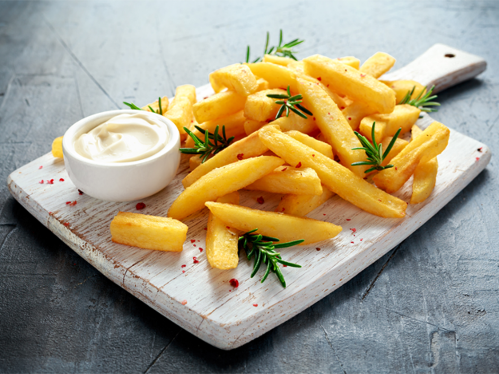
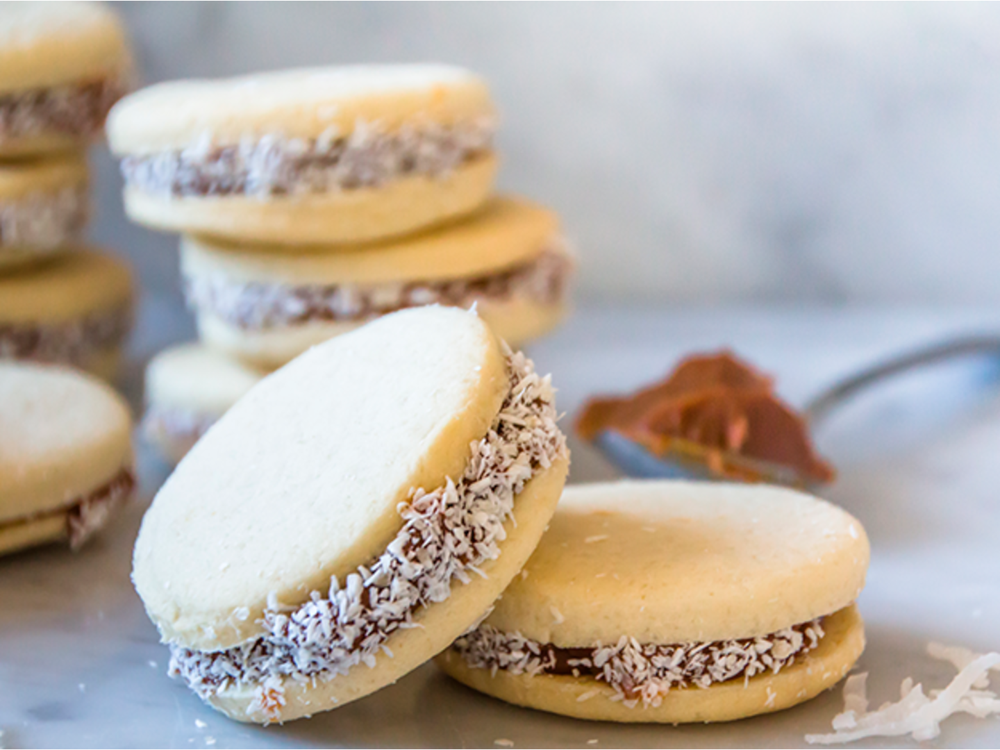

Recetas
Papas Fritas
Receta de papas fritas caseras

Ingredientes
- 3 a 4 papas (300gr)
- Aceite
- Sal
Elaboracion (Pasos)
- Pelar las papas
- Cortarlas en baston
- Calentar aceite en una sarten
- Cocinar hasta que queden doradas
- Removerlas del aceite y salar a gusto
Otras recetas
Alfajores de maizena
